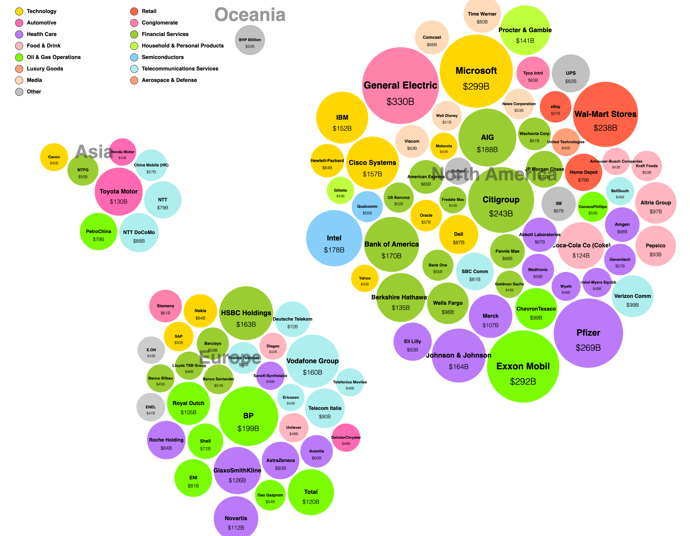
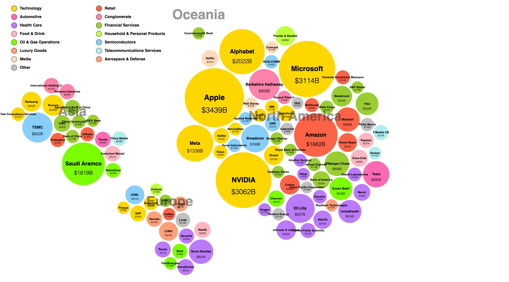
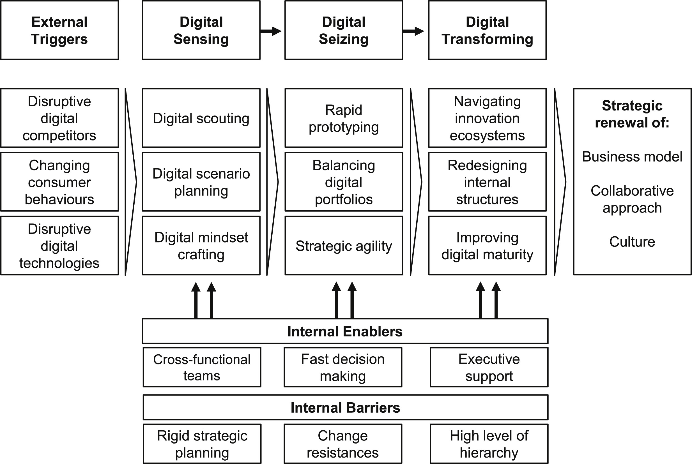
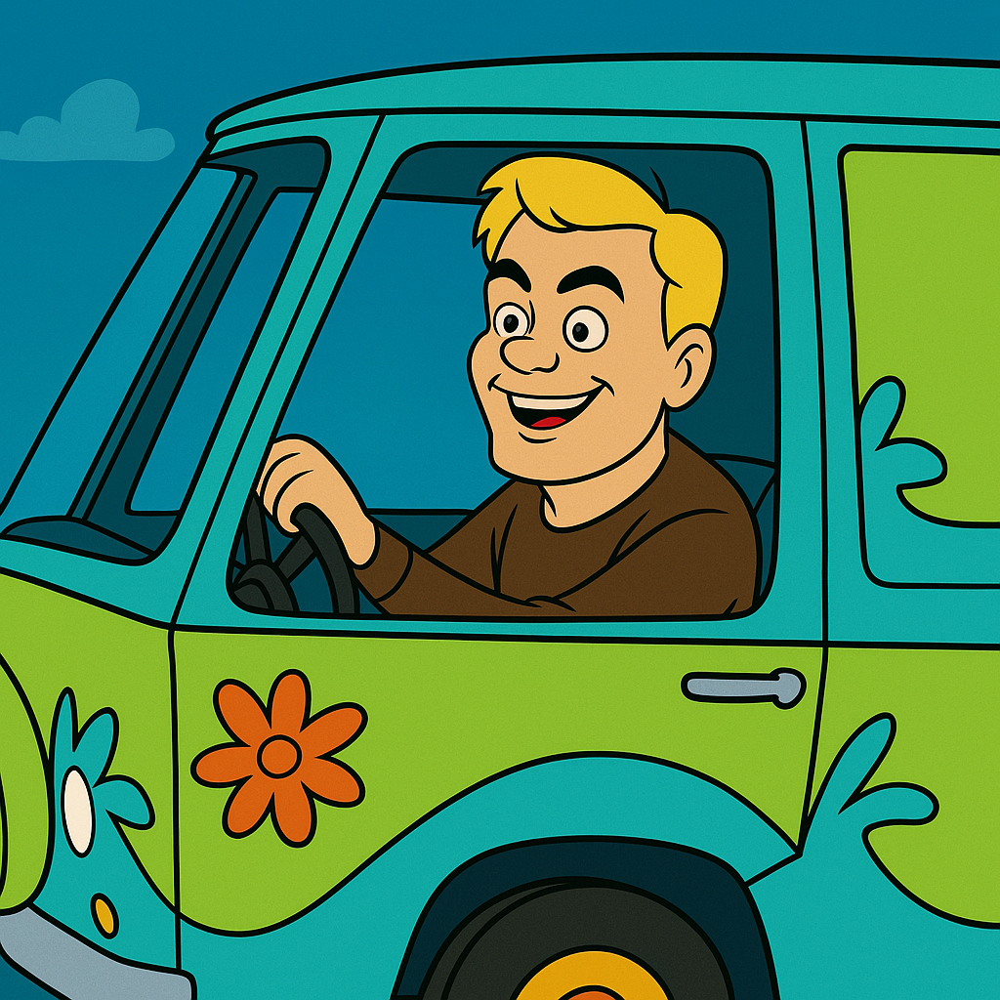

Minor Masterclass AI-Strategie

Meet the five AI persona types
- 🥰 The Maximalist
- 🤫 The Underground
- 😎 The Rebel
- 🤩 The Superfan
- 🧐 The Observer
Welkom in de AI Mystery Machine!
Samen gaan we de mysteries van AI ontrafelen!
- Waarom een AI-strategie?
- Wat maakt het zo moeilijk?
- Hoe ziet een AI-organisatie eruit?
Waarom een AI-strategie?
“Ruh-roh! Looks like we need a plan, Raggy!”
Navigeer naar rechts voor data →
De wereld in 2004

2024 - "Jeepers! Kijk naar die Tech Giganten!"

"Wat een groot prestatieverschil, Scoob!"
Wat maakt AI-implementatie zo moeilijk?
"Jinkies! We've got another mystery on our hands!"
- Data & Technische Hobbels
- Gebrek aan Expertise
- Organisatorische Weerstand
- En... Ethische Spoken!
Navigeer naar beneden voor ethische dilemma's ↓
Ethiek: Mentaal bewustzijn
"Als een AI-chatbot zegt: 'Ik begrijp helemaal hoe je je voelt', is dat misleidend."
Eens of oneens?
Ethiek: Mens-AI relaties
"Het is onmogelijk dat iemand een relatie met een AI-chatbot heeft die betekenisvoller is dan de relatie met hun echte familie of vrienden."
Eens of oneens?
Ethiek: Omgangsvorm
"Het is prima om onbeleefd of beledigend te zijn tegen een AI-chatbot, omdat het slechts een computerprogramma is."
Eens of oneens?
Ethiek: Verantwoordelijkheid
"Een AI-chatbot die vrouwen discrimineert bij het nemen van beslissingen tijdens sollicitatieprocedures is seksistisch."
Eens of oneens?
De AI-organisatie

Einde Mysterie?

Vragen? Let's discuss!
witektenhove@gmail.com | in/witektenhove/